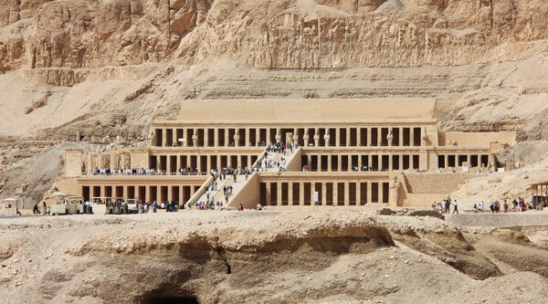
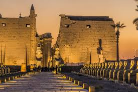

Luxor Temple
Luxor Temple (Arabic: معبد الاقصر) is a large Ancient Egyptian temple complex located on the east bank of the Nile River in the city.
and was constructed approximately 1400 BCE.
Unlike the other temples in Thebes, Luxor temple is not dedicated to a cult god or a deified version of the pharaoh in death.
Instead, Luxor temple is dedicated to the rejuvenation of kingship; it may have been where many of the pharaohs of Egypt were crowned in reality or conceptually (as in the case of Alexander the Great, who claimed he was crowned at Luxor but may never have traveled south of Memphis, near modern Cairo).
From medieval times, the Muslim population of Luxor had settled in and around the temple, at the southward end of the mount.
Due to the Luxor's past city population building on top of and around the Luxor temple, centuries of rubble had accumulated, to the point where there was an artificial hill some 14.5 to 15 metres (48– 50 ft) in height. The Luxor Temple had begun to be excavated by Professor Gaston Maspero after 1884 after he had been given the order to commence operations.
The excavations were carried out sporadically until 1960.

The temple has been in almost continuous use as a place of worship right up to the present day.
During the Christian era, the temple’s hypostyle hall was converted into a Christian church, and the remains of another Coptic church can be seen to the west.
Then for thousands of years, the temple was buried beneath the streets and houses of Luxor. Eventually the mosque of Sufi Shaykh Yusuf Abu al-Hajjaj was built over it. This mosque was carefully preserved when the temple was uncovered and forms an integral part of the site today.
Before the building works by Rameses II the northern end of the court was originally the entrance to the temple. It was an enclosed colonnade of seven pairs of 52-foot (16m) high open-flower papyrus columns. It was begun by Amenhotep III and completed by Tutankhamun and still support its huge architrave blocks.
The Court leads into a Hypostyle Hall, which has thirty-two columns.
At the rear of the hall are four small rooms and an antechamber leading to the birth room, the chapel of Alexander the Great, and the sanctuary.
ANOTHER DETAILS:
Tickets price:
| price | Adults | Students |
|---|---|---|
| 60 EGP | 30 EGP |
Working Hours :
It opens from 9 AM to 5 PM
Location
Philae Temples

is an island in the reservoir of the Aswan Low Dam, downstream of the Aswan Dam and Lake Nasser, Egypt.
Philae was originally located near the expansive First Cataract of the Nile in Upper Egypt and was the site of an Egyptian temple complex.
These rapids and the surrounding area have been variously flooded since the initial construction of the Aswan Low Dam in 1902.
The temple complex was dismantled and moved to nearby Agilkia Island as part of the UNESCO Nubia Campaign project, protecting this and other complexes before the 1970 completion of the Aswan High Dam.
Philae is mentioned by numerous ancient writers, including Strabo, Diodorus Siculus, Ptolemy, Seneca, Pliny the Elder.
It was, as the plural name indicates, the appellation of two small islands situated in latitude 24° north, just above the First Cataract near Aswan (Egyptian Swenet "Trade;" Ancient Greek: Συήνη). Groskurd computes the distance between these islands and Aswan at about 100 km (62 mi).

Despite being the smaller island, Philae proper was, from the numerous and picturesque ruins formerly there, the more interesting of the two. Prior to the inundation, it was not more than 380 metres (1,250 ft) long and about 120 metres (390 ft) broad. It is composed of syenite: its sides are steep and on their summits a lofty wall was built encompassing the island
.

In 1902, the Aswan Low Dam was completed on the Nile River by the British.
This threatened to submerge many ancient landmarks, including the temple complex of Philae. The height of the dam was raised twice, from 1907–1912 and from 1929–1934, and the island of Philae was nearly always flooded. In fact, the only times that the complex was not underwater was when the dam's sluices were open from July to October.
It was proposed that the temples be relocated, piece by piece, to nearby islands, such as Bigeh or Elephantine.
However, the temples' foundations and other architectural supporting structures were strengthened instead. Although the buildings were physically secure, the island's attractive vegetation and the colors of the temples' reliefs were washed away. Also, the bricks of the Philae temples soon became encrusted with silt and other debris carried by the Nile.
ANOTHER DETAILS:
Tickets price:
| price | Adults | Students |
|---|---|---|
| 50 EGP | 25 EGP |
Working Hours :
Regular visiting hours are from 7 AM to 4 PM. (October to May) or from 7 AM to 5 PM (June to September)